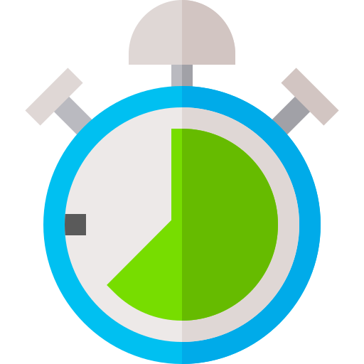

الدرس الخامس
الدرس الخامس
الحفاظ على تكرار وقوة ونوع النشاط والوقت المستغرق
للأنواع المختلفة من التمارين البدنية تأثيرات مختلفة. إذا كنت تتطلع إلى تحسين لياقتك في التمارين الهوائية، فإن ممارسة التمارين التي تتبع التمارين الهوائية بنظام F.I.T.T سوف تساعد على تقوية عضلات قلبك، لذا، فإنك لا تشعر أبداً بالتعب أو الإجهاد عند ممارسة الأنشطة البدنية مثل صعود الدرج أو حمل مشتريات البقالة.
F.I.T.T ترمز إلى:
-

تكرار النشاط
كم مرة تمارس نشاطك البدني؟
-

قوة النشاط
مدى القوة التي يحتاج القلب لبذلها أثناء ممارسة النشاط.
-

الوقت المستغرق في النشاط
كم المدة الزمنية التي يستغرقها نشاطك البدني.
-
نوع النشاط
ما الذي تمارسه تحديدًا.

دعنا نتناول كل نقطة أو جانب من النقاط أعلاه ونرى كيفية تطبيقها عمليًا.